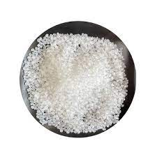
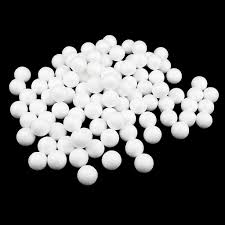

Why saving the turtles is important?
Sea turtles have played vital roles in maintaining the health of the world's oceans for more than 100 million years. These roles range from maintaining productive coral reef ecosystems to transporting essential nutrients from the oceans to beaches and coastal dunes.
Different types of plastic in the ocean

Microplastics - It takes 100 to 1000 years to decompose and can be found in cosmetics, body scrubs and toothpaste.

Polypropylene - It takes 20 to 30 years to decompose and can be found in bottle caps, straws, yoghurt cups and car bumpers.

Polystyrene - It takes 500 to 1 million years to decompose and can be found in filling, food packaging, disposable cutlery and plates or cassettes.